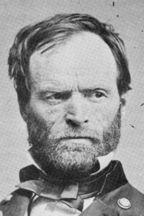

|

|

|
|
|
Famed and feared Union Civil War General, William Tecumseh
Sherman is best known for his famous "March to the Sea," in
which his western army invaded Georgia in the fall of 1864.
A believer in a hard war but a soft peace, Sherman emerged
from the Civil War an immensely popular and revered soldier
among the former Union troops. Serving with distinction as
general in chief of the United States Army until 1883, he
declined the Republican presidential nomination twice, in
1872 and 1884, stating, "if nominated, I will not run, if
elected, I will not serve."
Named after the warrior Indian Chief of the Ohio
Confederacy, Tecumseh was born on February 8, 1820 to
Charles R. Sherman, a state judge, and Mary Hoyt Sherman in
Lancaster, Ohio. Charles Sherman died suddenly in 1829,
leaving his wife and 11 children in poverty. Thomas and
Maria Ewing, a wealthy Catholic couple with six children,
adopted Tecumseh. A long time family friend, Thomas Ewing,
prominent Whig, U.S. senator, cabinet officer, exerted a
significant influence on Sherman's life. The nine-year-old
red-haired Tecumseh (called "Cump") was baptized in the
Catholic faith, and given the first name of William.
At 16, William T. Sherman entered the United States
Military Academy at West Point. An excellent if troublesome
student, Sherman graduated 6th in the class of 1840. From
1842 until 1846, Lieutenant Sherman served in the Seminole
War in Florida, and in South Carolina. To his
disappointment, Sherman was sent to California during the
Mexican War, missing the excitement and experience of the
conflict. In California, he witnessed the transition to
statehood, and viewed first hand the effects of the gold
rush of 1849.
In 1850, Sherman left California and transferred to
Washington, D.C. That same year, he married Ellen B. Ewing,
his foster sister. The Ewings wished for Ellen and William
to settle near them in Lancaster, Ohio. Ellen agreed with
her parents, and asked Sherman to leave the army, settle
down, and take up a profession. This he refused to do for
her, and it was the first of many bitter arguments between
husband and wife. Stubborn and proud, Sherman was determined
to prove to the powerful family who raised him, and who now
welcomed him as a son- in-law, that he could be successful
on his own terms.
By 1853, however, a discouraged Sherman resigned from the
army to earn more money for himself and his growing family.
Through personal connections, he accepted a position as a
banker in San Francisco. At first Sherman prospered, and
happily remained in San Francisco until 1857. Unfortunately,
the economy crashed in that year and Sherman's bank declared
bankruptcy. Other business enterprises followed in short
order and ended in failure as well.
Unfit for the world of finance, Sherman became the
superintendent of the Louisiana Military Seminary in 1859.
Leaving seceded Louisiana in 1861, Sherman returned to
service in the Union Army. His younger brother, John
Sherman, had just been elected U.S. senator from Ohio, and
helped him obtain a commission as colonel in the regular
army. He led his forces at first Bull Run in July, 1861,
where he was one of the few Union officers to distinguish
themselves in that battle loss. Viewing the disorganized
federal retreat, he felt extremely pessimistic about the
future of the Union, and predicted that the war would take
much longer than most people thought at the time.
In August of 1861, Sherman was named brigadier general of
Volunteers, and was sent to Kentucky as an aide to the
commander of the Department of the Cumberland, Robert
Anderson. Kentucky was a key state for the Union to retain,
and when Sherman declared that he would need 40,000 troops
for its defense, or 200,000 troops for an offensive attack
against Rebel forces, critics called him insane. Depressed,
Sherman suffered a collapse, and was relieved of his duties.
Sherman served briefly as an aide to Western Division
commander General Henry W. Halleck in St. Louis, and then
was reassigned to a training post. His prominent family
successfully defended Sherman against charges of instability
during this difficult period. In February of 1862, Halleck
put Sherman in charge of the headquarters in Paducah,
Kentucky, which was under the command of Ulysses S. Grant.
Sherman's military career took a sharply upward
trajectory. Reassured by Grant's calm, steadfast demeanor
and purposeful leadership style, the tall, slender Sherman
had found a boss who appreciated his brilliant talents, and
protected him from his own worst traits. Never a modest man,
Sherman admitted that he possessed more pure intellectual
ability than his friend. But, he added of Grant: "He don't
care a damn for what the enemy does out of his sight, but it
scares the hell out of me." Truly, they were "partners in
command," who would together bring the Union army its
ultimate victory in the field. Sherman led a division at the
battle of Shiloh in spring of 1862, and despite being
surprised by the Confederate attack early on April 6th,
rallied his men forcefully to win the next day.
Shiloh was a victory, but a costly and controversial one.
Continued southern resistance, even while under northern
occupation and suffering terrible losses in battle, caused
Grant and Sherman to have long conversations about the
course of the war. Both decided that winning required not
only the defeat of the Confederate armies, but also the will
of the southern people. Sherman's experience as military
governor of Memphis, Tennessee drove home the hard lesson
that southern civilians were unrepentant. In an October 1862
letter to Grant, Sherman articulated his basic philosophy:
"We cannot change the hearts of those people of the South,
but we can make war so terrible that they will realize the
fact that however brave and gallant and devoted to their
country, still they are mortal and should exhaust all
peaceful remedies before they fly to war."
Promoted to major general of Volunteers, and commander of
the XV Corps, Sherman left Memphis for Grant's Vicksburg
Campaign during the winter of 1862. He and his troops
suffered a terrible defeat at Chickasaw Bayou, Mississippi
on December 27, 1862. Sherman became convinced that Grant's
plan was fatally flawed, but loyal to his friend and
commander, he did everything he could to support the
campaign's success. Against Sherman's advice, Grant's
decided to cut his supply lines and live off the land once
his forces were across the Mississippi River. Its success
and the subsequent capture of Vicksburg on July 4th
provided him with a lesson that he put to use the following
year in Georgia.
Famous and celebrated in the north, Sherman's pleasure in
the victory was short-lived; his son, Willie, who had been
visiting his father with Ellen, died from a fever contracted
in camp. The pressures of war did not allow time for
mourning, however. Grant was placed in charge of all the
Union armies in the western theater. President Lincoln
quickly approved his recommendation that Sherman succeed him
as head of the Army of Tennessee. After the Federal victory
at Chattanooga in the fall of 1863, Lincoln named Grant
commander in chief of all the Union armies; Sherman again
assumed Grant's former position. Grant's "total war"
strategy for the spring and summer of 1864 included two
vital tasks for Sherman's western campaign: to capture
Atlanta and destroy Joseph E. Johnston's Army of Tennessee.
Marching east, Sherman's army fought Johnston's at
several notable battles, including Kennesaw Moutain on June
27, 1864, where the Union's frontal assault failed at great
cost to the men. Despite several drawbacks, Sherman besieged
and then captured Atlanta on September 2nd, assuring
Lincoln's victory in the 1864 presidential election.
Leaving much of Atlanta in flames, Sherman moved eastward
again, marching toward Savannah, Georgia. "War is cruelty,
and you cannot refine it," Sherman warned. He targeted
property and morale among Confederate citizens. By waging
psychological warfare, Sherman believed that he made Union
victories easier to obtain with fewer casualties among both
soldiers and civilians. This idea was central to his "March
to the Sea." With Savannah under Union control, Sherman and
his army turned northward through the Carolinas, living off
the land and terrorizing the inhabitants of plantations.
Historians have found that Sherman and his men, for the most
part, acted with restraint until they entered South
Carolina. "The whole army is burning with an insatiable
desire to wreck vengeance upon South Carolina, Sherman
wrote, I almost tremble at her fate, but feel that she
deserves all that seems in store for her." The destruction
of Columbia, South Carolina by the Union forces left the
city a smoking ruin.
Sherman's strategy proved a military and political
triumph for the northern war effort. Throughout the
southern countryside, Sherman and his hardened, sunburned
western soldiers burned designated property and destroyed
homes and towns. Thousands of slaves followed in their wake.
Sherman issued Special Field Order No. 15 that set aside
confiscated land for the freed people. He did so more out of
a desire to rid his army of its African American followers
than from a genuine desire to bring revolution. Indeed,
Sherman opposed the Emancipation Proclamation and the arming
of black soldiers. He was mainly concerned with preserving
the order and sanctity of the Union. Despite the popular
memory of Sherman's march, casualties were slight. With
Union victory in hand, Sherman asserted that "The legitimate
object of war is a more perfect peace."
Sherman accepted the surrender of his Confederate
counterpart, Joseph E. Johnston, at Durham, North Carolina
on April 26, 1865. Sherman, acting on his understanding of
Lincoln's desire to forge a generous peace, overstepped his
military role in writing out the terms. The new President
Andrew Johnson and his Secretary of War, Edwin Stanton,
rejected the agreement. Sherman re-negotiated the surrender
in a form much harsher toward southerners.
In 1869, with Grant as President, Sherman was the
commanding General of the United States Army. He served for
fourteen years, presiding over the "pacification" of Native
American Indian tribes for the settlement and development of
the western states and territories. Following his retirement
on February 8, 1884, Sherman became one of the Gilded Age's
most popular lecturers. When not speaking about his
experiences, he wrote for national magazines, presenting his
version of the history of the war. He published his
Memoirs in 1875. Sherman was a passionate supporter
of veterans groups, and often spoke at important anniversary
celebrations. William T. Sherman died on February 14, 1891
in New York City, where he had lived since 1886. Sherman's
legacy as one of the most important military leaders of the
Civil War remains unchallenged.
Source: Joan Waugh, ed., Facts on File Encyclopedia of American
History: Civil War and Reconstruction, 1856 to 1869 (New York: Facts on
File, 2003), 319-321.
|